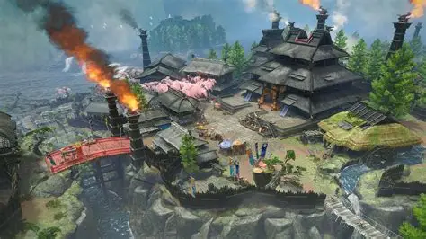
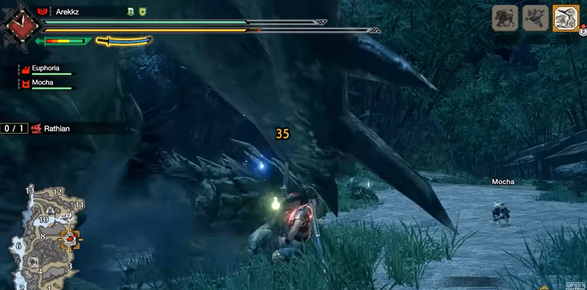
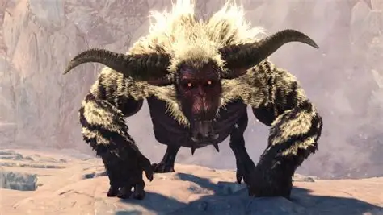
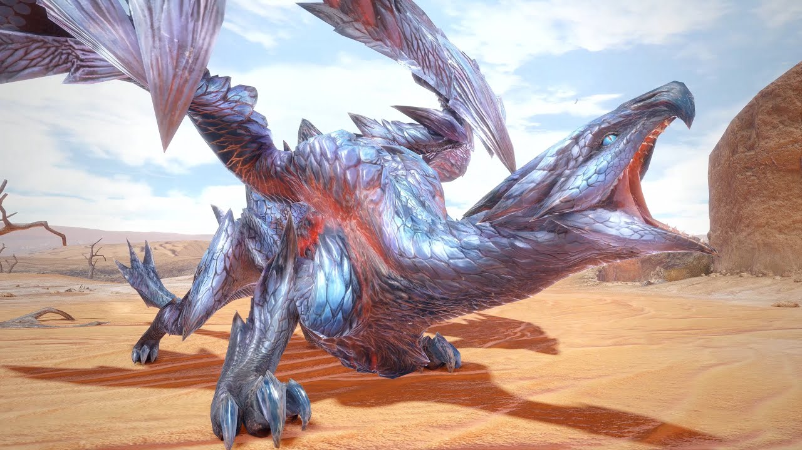

bienvenue sur le wiki monster hunter ou vous apprendrez a vous familiarisez avec le jeu
monster hunter rise est un des succes de capcom cest un jeu de combat de boss et de chasse en temps limite
Dans ce jeu, vous incarnez un chasseur dans la ville de Kamura. Cette dernière est un véritable bastion de chasseurs d'élite. C'est là-bas que vous faites vos marques et que vos premières missions vous sont attribuées.
katana moveset
le katana aussi appele katanoob est lune des armes les plus puissantes du jeu elle present un moveset tres complet pour apprendre a la jouer il faut comprendre le systeme de jauge et de counter , mais aussi comprendre a combiner certains mouvements en utilisant les filopteres.le katana dispose de plus attaques interessantes nottament lattaque sakura avec l2 triangle qui est lune des attaques les plus fortes du jeu car cest une attaque multi hit qui fait enormement de degats mais sa force reside dans le fait quelle augmente la jauge du katana si lattaque touche lennemi.

comme vous pouvez le voir, ci dessus la jauge est ce qui se trouve en haut a gauche cest lune des composantes les plus essentielles du katana car plus la jauge augmente plus les attaques sont puissantes dans lextension sunbreak le rouge est meme necessaire pour pouvoir faire le rengainage eclair en mouvement qui est le counter le plus style de tout le jeu.
erreurs a ne pas faire avec le katana
voici quelques erreurs a ne pas faire avec le katana :
- rester devant le boss ou etre trop distant avec lui. Avec le katana il ne faut pas hesiter une seule seconde a etre en dessous du boss la plupart des dragons ou creatures nont pas de move pour se proteger des attaques venu den bas. de plus en equipe le role du joueur katana est de couper la queue du boss car il a larme parfaite pour et detre constamment agressif
- utiliser massivement les counter et etre patient. si faire des degats est une priorite frapper son ennemi de maniere aleatoire est une erreur immense monster hunter reste un jeu de rythme il faut apprendre a lire des boss donc il faut etre tres patient utiiser le rengainage eclair r2 croix et la liberer quelques frames avant lattaque du boss avec r2. et aussi utiliser massivement r2 rond qui est une esquive en arriere qui permet denchainer sur un combo et daugmenter la couleur de sa jauge par la meme occasion.
- ne pas faire de combo si sa jauge est vide ou pas rempli cela annule juste le combo et fait que vous allez faire peu de degats en plus de remettre votre jauge a zero si elle etait partiellement rempli r2 doit etre utilise uniuqement en cas de full combo
- aiguisez ! aiguisez ! et aiguisez votre arme ! le katana est lune des armes qui semousse le plus rapidement une fois le tranchant dans le jaune ou l'orange larme ne fait presque plus de degats. alors penser a aiguiser son arme est indispensable
combats et boss
le jeu a de nombreux boss a affronter, chacun avec ses propres patterns d'attaque et ses faiblesses. il existe un bestiaire dans le jeu qu'il ne faut pas hesiter a lire dans le jeu pour comprendre les faiblesses dun boss. certains boss ont des parties bcp plus vulnerables alors que dautres sont au contraire extremement dur et font vaciller l'arme a chaque coup.


prenez par exemple ces deux boss le valstraax et le raajang qui sont deux boss les plus durs hors extension. le valstraax par exemple a un des pattern les plus fou du jeu nottament sa version en quete evenement qui est le boss final du jeu dans la version de base du jeu. voila les erreurs a ne pas commettre contre lui :
- il a un laser ultra puissant quil fait souvent celui ci est extremement dangereux il one shot cest pour ca que vous devez toujours vous poser de cote face a lui si vous etes juste en face les chances que vous mourriez sont tres hautes car lattaque vous enfermes dans ailes et vous one shot
- il a aussi un coup d'aile qui ressemble a un coup destoc celle ci enleve toute votre barre de vie est extremement rapide et dangereuse voila pourquoi vous ne devez jamais vous tenir a mi distance face a lui soyez soit juste en dessous soit tres loin un maximum
- a un moment il se transforme cette transformation est accompagne dune animation ou il est entoure dune aura et absorbe de lenergie ce moment la il est immobile. ET VOUS DEVEZ ABSOLUMENT ETRE DEVANT LUI A CE MOMENT LA POUR EVITER QUIL SE TRANSFORME VOILA POURQUOI IL EST ESSENTIEL DE RESTER EN DESSOUS DE LUI TRES PROCHE ET NE PAS HESITER A FAIRE UNE ROULADE DES QUIL ESSAYE DE SE TRANSFORMER ET IMMEDIATEMENT FRAPPER SON TORSE CAR SI VOUS NE FRAPPEZ PAS SON TORSE IL SE TRANSOFRME ET AUGMENTE SA PUUSSANCE PAR QUASIMENT 2
- il a aussi une attaque ou il fonce extrmement rapidement de maniere aleatoire sur vous comme une fusee le plus important est de gerer sa rechute gardez toujours filoptere de disponible et faites l2 croix pour pouvoir rapidement revenir dans la bataille. dans ces sequences la il est aussi tres important de gerer son tilt et ne pas rager car vous prendrez cette attaque de tres nombreuses fois.
les afflictions et talents
maintenant lune des composantes les plus importantes du jeu sont les talents . les deux talents les plus puissants de tout le jeu pour le katana sont le rengainage eclair qui cree un quasiment un nouveau move tellement vos rengainages sintegrent bco plus naturellement en combat vous rengainez bcp plus rapide et pouvez faire vos counter bcp plus rapidement et efficacement.ET LE TALENT LE PLUS FORT DU JEU evade extender qui permet de faire des roulades beaucoup plus rapides et longues, cela permet de fuire rapidement un boss se replacer tres rapidement cest un must have pour un joueur katana vous vous sauvez de nombreuses situations normalement mortelles grace a ce talent. les afflictions sont aussi extremement importantes dans le jeu car elles rajoutent des degats elementaires ou des effets vraiment interessants, voila les differents talents :
- le feu qui rajoute des degats elementaires
- le dragon qui est un talent tres particulier tres efficace contre les dragons anciens (Kushala daora, valstraax,teostra)
- le sommeil qui a une certaine quantite de degats fait dormir le monstre et permet de charger une attaque sur lui une fois endormi qui le reveillera proprement...
- le poison qui fait perdre de la vie progressivement.
- la glace qui touche a lendurance du monstre et le fatigue beaucoup plus rapidement
- la foudre qui fait des degats elementaires
- la paralysie qui rend le monstre immobile une fois quil a ete assez frappe
- le fleau explosion qui est extremement fort que vous pouvez avoir grace au magnamalo. une fois une certaine quantite de dps le boss subit une explosion a lattaque dapres qui fait un gros dps dun coup
- et enfin l'eau que j'ai tres peu utilise mais qui fait des degats elementaires
voila des videos de la team darkside qui est extremement forte au jeu pour y voir plus clair et pour des conseils avances sur le jeu :